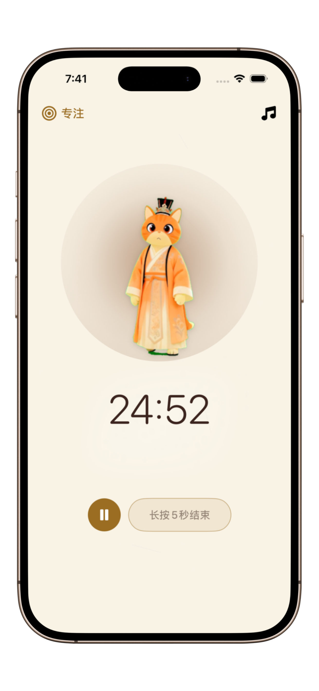
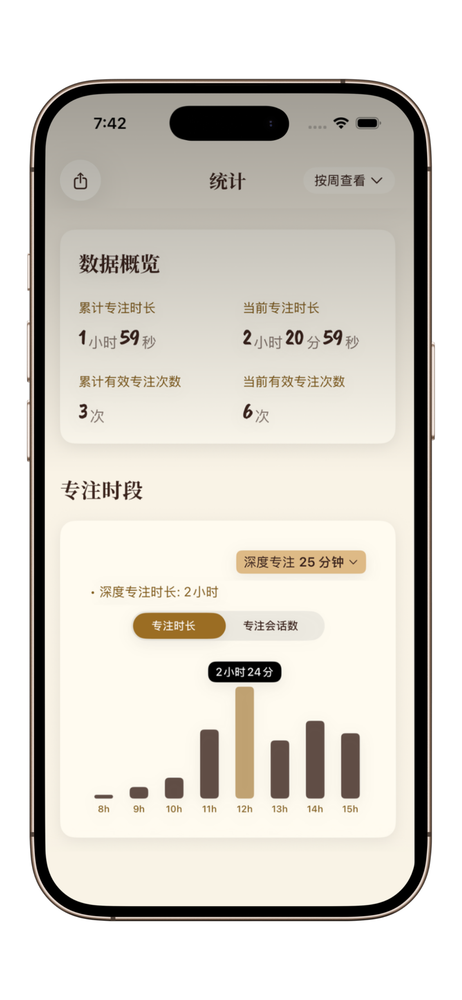

如何建立持久的专注习惯（且不反弹）
放弃意志力神话。学习如何通过优化环境和生理机制，让“专注”成为你的默认工作状态。
大多数人无法养成专注习惯，是因为他们把专注当成了一场“冲刺”。事实上，专注力就像肌肉——如果你第一天就尝试举起 100 斤的杠铃，必然会受伤。长期高效的秘诀在于：从微小到不可思议的步骤开始。
“习惯回路”的心理学逻辑
每个习惯都由四个部分组成：提示（Cue）、渴求（Craving）、反应（Response）和奖励（Reward）。要建立专注习惯，你必须让提示变得显而易见，并让奖励变得令人满足。
第一步
建立视觉锚点
打开一个特定的应用（如 喵时计（PurrrrrFocus））可以作为一个视觉“触发器”。当你的大脑看到沉静的水墨界面和猫咪伴侣时，它会开始自动将此环境与“深度工作”联系起来。
第二步
“5 分钟”切入法
参考《微习惯》理论：不要承诺专注一小时，只承诺专注 5 分钟。喵时计 允许你设置极短的专注时段，从而消除启动任务时的心理阻力。
第三步
追踪与奖励持续性
不要追求完美，要追求“不中断”。利用 喵时计 记录你的每日专注连胜。每一次完成专注都是一次微小的胜利，它会重新布线你的大脑，让你产生对“专注状态”的积极渴求。


为什么“意志力”是你的敌人
意志力是一种有限的资源。如果你依赖意志力来保持专注，最终会导致倦怠。相反，你应该利用“环境设计”。通过使用一个极简的计时器，你移除了“决定变得高效”这一决策过程——系统已经为你打理好了一切。
即时奖励你的努力
大脑需要多巴胺来强化习惯。在 喵时计 中，完成专注后的成就感以及看到专注数据增长的视觉反馈，提供了习惯形成所需的即时正向循环。